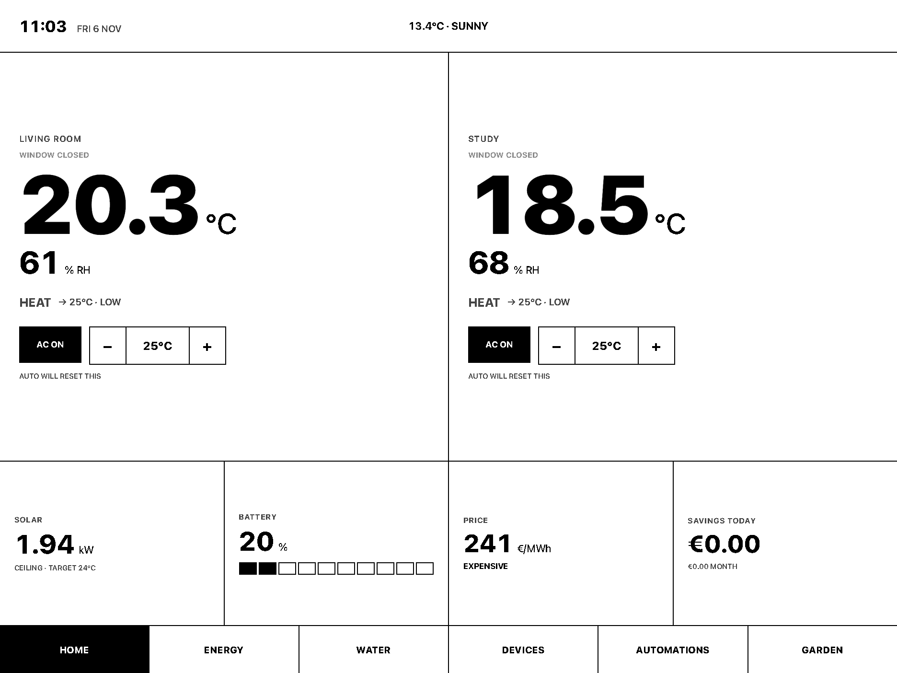
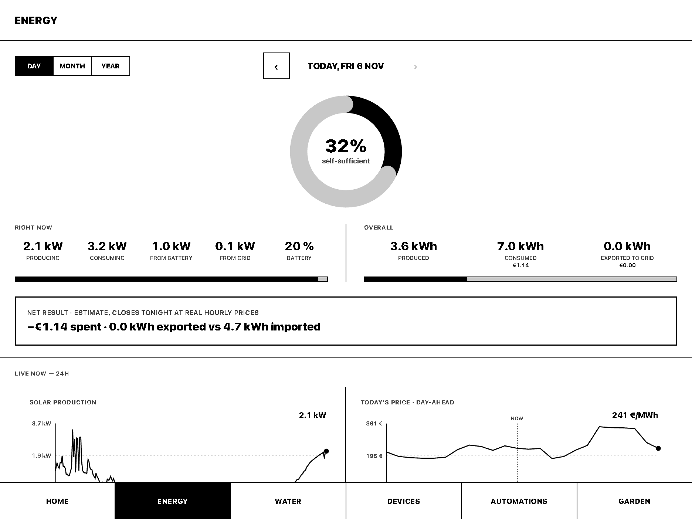
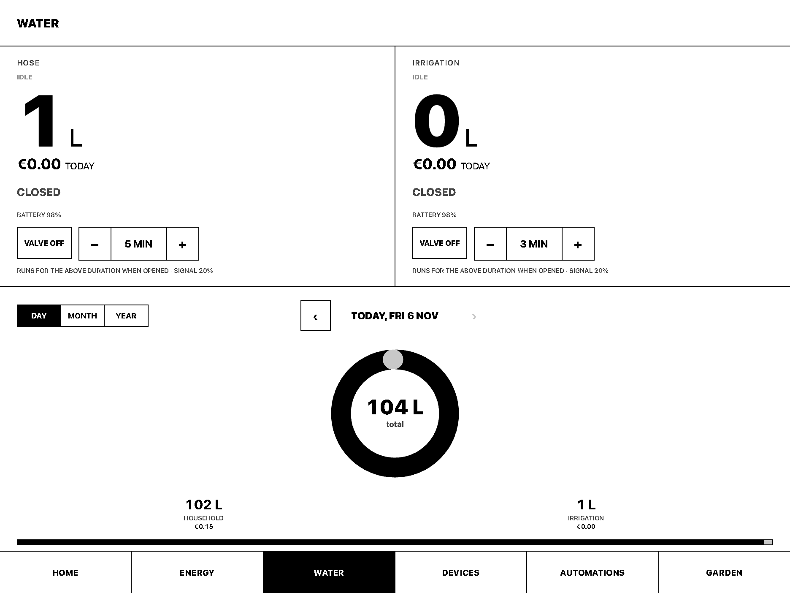
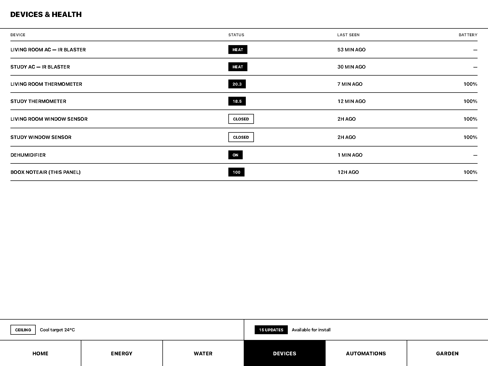
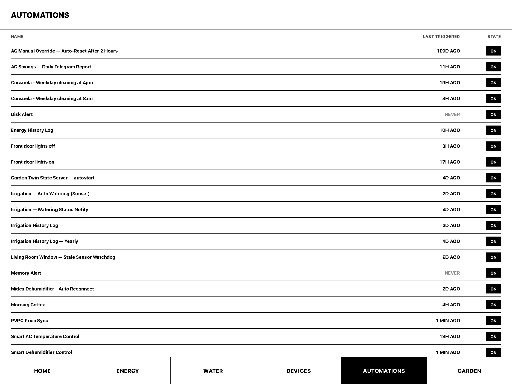
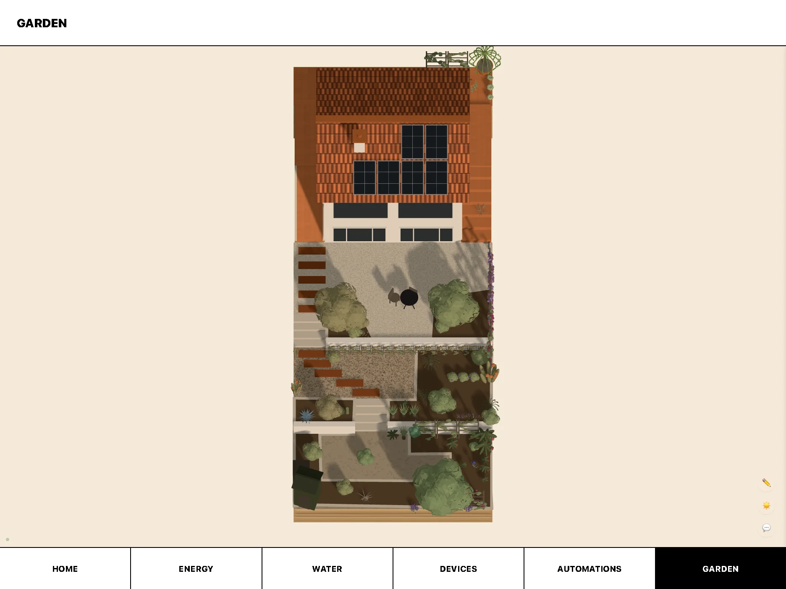
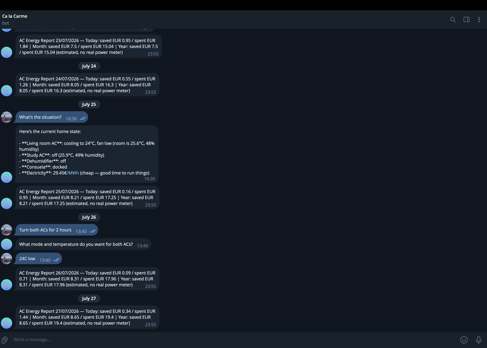
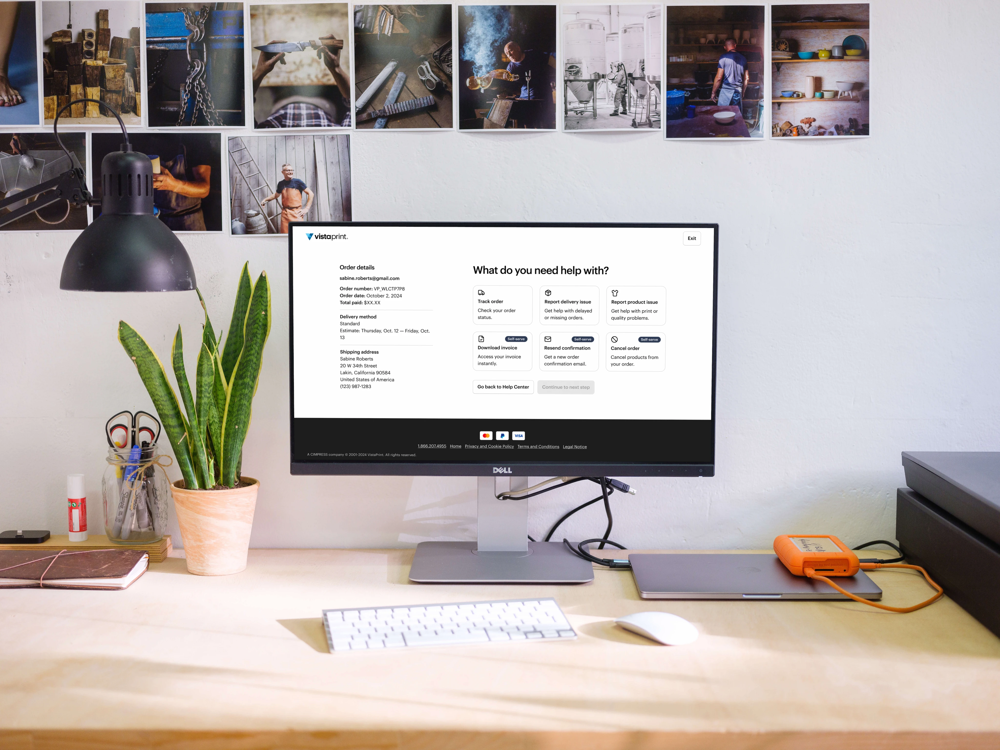

There's more to explore — here are two other projects worth your time.

Order Help: From a Significant Contact Volume Problem to a Self-Service Platform Read case studyBefore Ca la Carme, the house ran on smart devices with no shared logic. Two Fujitsu ACs, a dehumidifier, and a Zigbee window sensor all lived inside Home Assistant, but every decision — whether to run an AC, at what temperature, how hard the fan should run — was manual, with no link between electricity price and climate control, and no way to check or act on any of it except through Home Assistant's own dashboard, one device at a time.
Designed an e-ink wall panel as the control surface for the house, and owned the system behind it — automation logic, the Telegram bot, and incident response — with no engineering team and no QA process; the only users are my household. Every design, deploy, and on-call decision was mine, working with Claude as a build partner.
panel/index.html, a single-file app with six views built for the NoteAir's 1872 × 1404 canvas, deployed by deploy_panel.pysmart_ac_automations.yaml for summer and shoulder, winter_smart_ac_automation.yaml for winter), the dehumidifier loop, the window-sensor watchdog, irrigation, and nightly energy, water, and irrigation history logs that feed the panelca_la_carme HA add-on (v1.3.0) — the Dockerized Telegram bot with seven tools, rebuildable on demand via ha addons rebuild local_ca_la_carmesync_from_pi.py to detect drift between the repo and the Piha_restore_helpers.py — recovery script for restoring non-persistent helpers after a crashesios_price_sync.py — hourly PVPC electricity-price sync, run by a Home Assistant automation on the Pi, replacing a native integration that was contributing to crashesdesign.md — the e-ink panel's design document, with written design briefs for the panel and for its Energy viewHANDOFF.md — the living reference for infrastructure, every automation's logic and entity IDs, incident history, and standing deploy rules; the source for this case studyAGENTS.md — operating rules for the AI assistant, including deploy rules and safety checks such as verifying routers before re-pairing a sensor